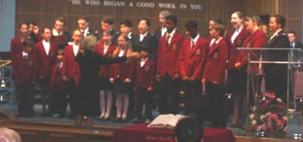
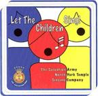

|
North York Temple Band (see next page)
Bandmaster: Glenn Barlow
North York Temple Songsters (see next page)
Leader: Robert Venables
Our songsters, The Salvation Army’s version of a choir, performs every Sunday during our worship service. They sing many styles of music that include traditional choral, contemporary worship, southern gospel and many more.
North York Temple Youth Band
Band Leader: Robert Venables
This group is formed by young members of our church that express interest in playing a brass instrument. Through diligent practice and creative musical arrangements, this band has performed on a number of occasions.
North York Temple Learners Band
Band Leader: Ken Graham
We are striving to teach any new learners how to play a brass instrument. When opportunity and ability allows, learners will then play with the Youth Band.
Singing Company & Youth Chorus
Leader: Sherrilyn Hall-Barlow
This is our children’s choir that perform at many special events as well as a yearly Christmas pageant. This has been a great outreach to the community as many members have joined since seeing a performance.
They have also recorded a CD entitled “Let the Children Sing!”. |
 
|
Praise & Worship Team
Leader: Doug & Janine Elvin
We strive to provide another form of worship, offering a mixture of traditional and contemporary music. |
|
25 Centre Ave North York, ON M1H 2C3 |
Phone: 416-225-7968 e-mail: corps@northyorktemple.ca |